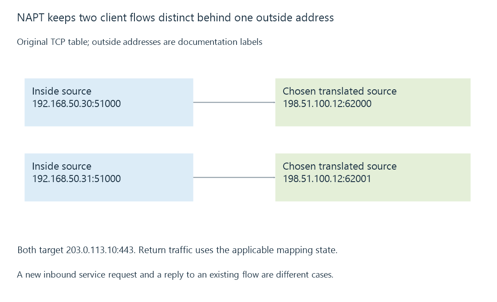

NAT and address/port translation state
NAT rewrites endpoint addressing across network realms, with address/port translation retaining state that associates outside traffic with the intended inside flow.
Many home IPv4 networks use private addresses internally and one outside address at the gateway. Network address translation, or NAT, connects those address realms by rewriting relevant packet fields.
The common address-and-port form, NAPT, lets several inside flows share one outside address while retaining different associations.
Two equal source ports can become distinct outside flows
Use this original teaching table. The outside addresses are documentation labels:
| Inside source | Remote destination | Translated outside source |
|---|---|---|
| 192.168.50.30:51000 | 203.0.113.10:443 | 198.51.100.12:62000 |
| 192.168.50.31:51000 | 203.0.113.10:443 | 198.51.100.12:62001 |
Both clients selected source port 51000. Their different inside addresses distinguish their original flows; the gateway’s chosen outside ports distinguish these two translated flows.

A reply for outside port 62000 can be translated back to the first inside endpoint under this model. Port 62001 belongs to the second.
The actual mapping key and reuse behavior depend on protocol and gateway implementation. Equal outside port values can have additional context in other policies.
The return association has to remain available
An original reduced state entry is:
{
"protocol": "tcp",
"inside": {"address": "192.168.50.30", "port": 51000},
"outside": {"address": "198.51.100.12", "port": 62000},
"remote": {"address": "203.0.113.10", "port": 443}
}
This is explanatory state, not a router configuration or captured connection.
The translation changes the packet’s endpoint representation. Return traffic needs to traverse a gateway that has the applicable association or another supported configured mapping.
Changing the path to a gateway without that state can break the flow even though both gateways can route ordinary packets.
A reply is different from a new outside request
The clients’ outbound operations created the relevant associations. A new outside viewer asking for an Emby service has not necessarily created such inside-originated state.
A port-forward supplies an explicit inbound mapping for the selected service. It is a different intent from allowing replies to an outbound client connection.
Mapping behavior and filtering behavior are also distinct. A translation can identify the inside endpoint while another policy rejects the incoming traffic.
Address translation does not define the application identity
The translated outside address can represent several clients. A server observing it cannot recover each viewer’s private endpoint simply from that address.
Likewise, a gateway’s translation does not authenticate an Emby user or encrypt an HTTP session. Those operations belong to other layers of the path.
Address translation is not required merely because a connection uses IPv6; routed IPv6 has its own reachability and firewall conditions.
State has a lifetime
Mappings can expire, be removed or disappear after a gateway restart. A client’s saved URL can remain unchanged while that traffic state changes.
See Also
- Port forwarding and the complete inbound path
- Double NAT and two translation boundaries
- Carrier-grade NAT and control of inbound mappings
- NAT loopback and same-network public endpoints